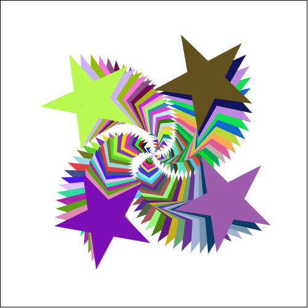
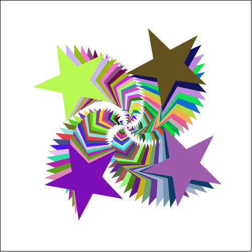

6.2.1
Racket Turtle
| (require teachpacks/racket-turtle) | package: teachpacks |
In WeScheme use (require wescheme/Engb0r37Kg)
Racket Turtle - library provides a simple interface for drawing traditional turtle-graphics. Racket Turtle has also a stamper functionality, so its images are not limited to line drawings.
Racket Turtle was designed to teach programming and geometrical concepts for middle school students but it can also be used to teach more advanced programming concepts such as lists and recursion.
Images drawn with Racket Turtle:


 

4.11 Changing background color, background image and animation size |